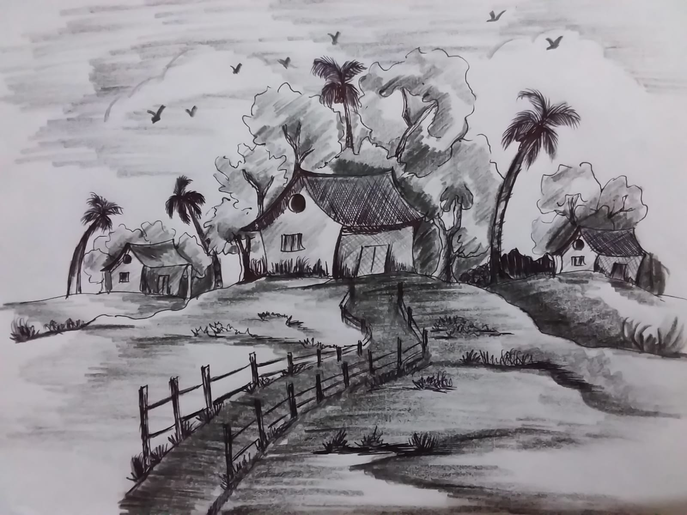
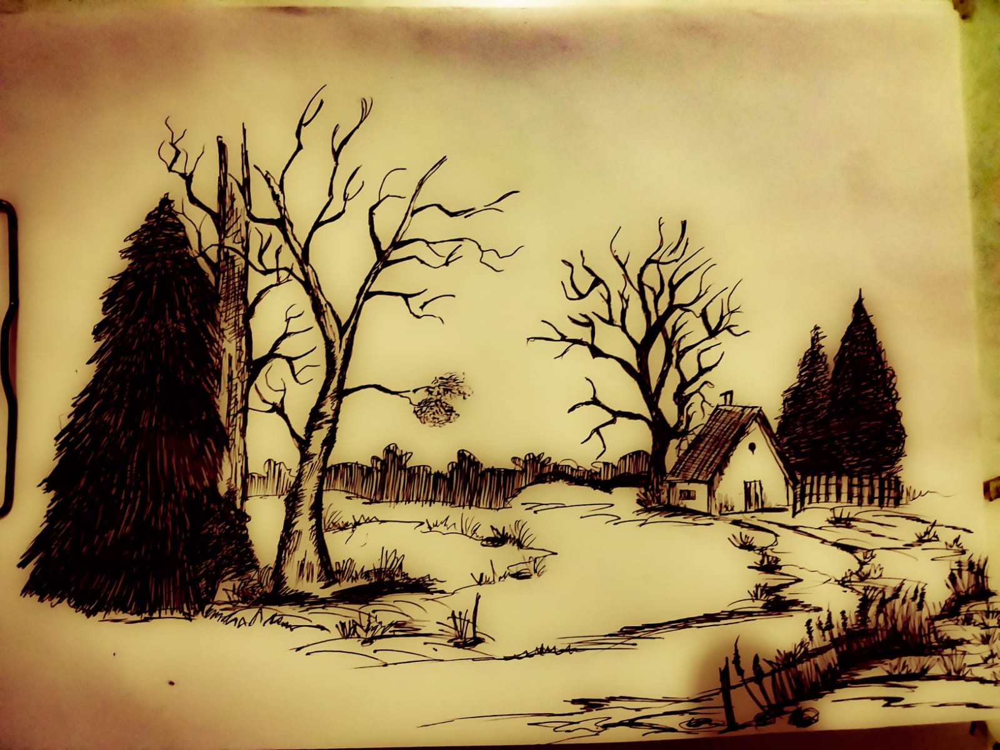
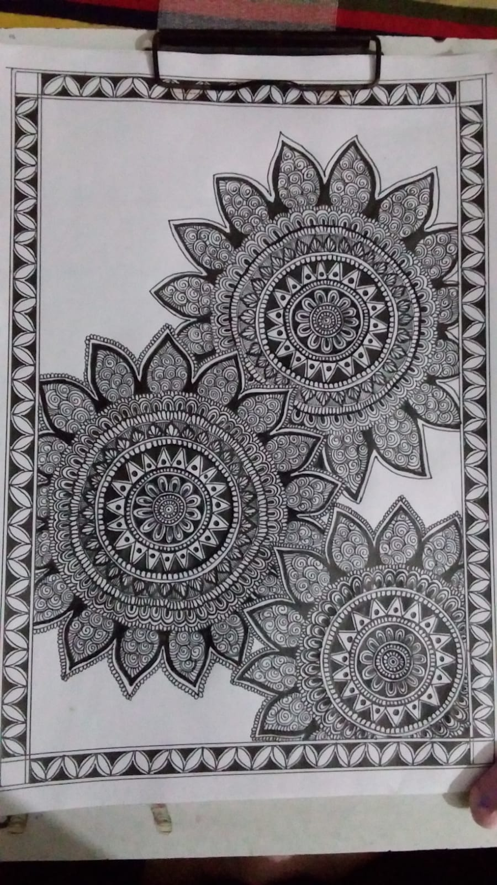
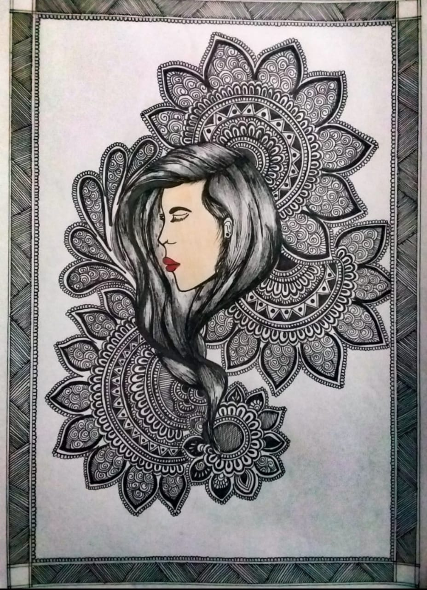

Madhubani Art (or Mithila painting) is a style of
Indian painting, practiced in the Mithila region of the
Indian subcontinent. This painting is done with a
variety of tools, including fingers, twigs, brushes, nib-pens,
and matchsticks and using natural dyes and pigments. It is characterised by its
eye-catching geometrical patterns. There is ritual content for
particular occasions, such as birth or marriage, and festivals,
such as Holi, Surya Shasti, Kali Puja, Upanayana, and Durga Puja.


Madhubani painting (Mithila painting) was traditionally created by
the women of various communities in the Mithila
region of the Indian subcontinent. It originated from
Madhubani district of the Mithila region of Bihar. Madhubani is
also a major export center of these paintings. This painting as a
form of wall art was practiced widely throughout the region;
the more recent development of painting on paper and canvas mainly
originated among the villages around Madhubani, and it
is these latter developments that led to the term "Madhubani art"
being used
alongside "Mithila Painting.
click here to get back to home page